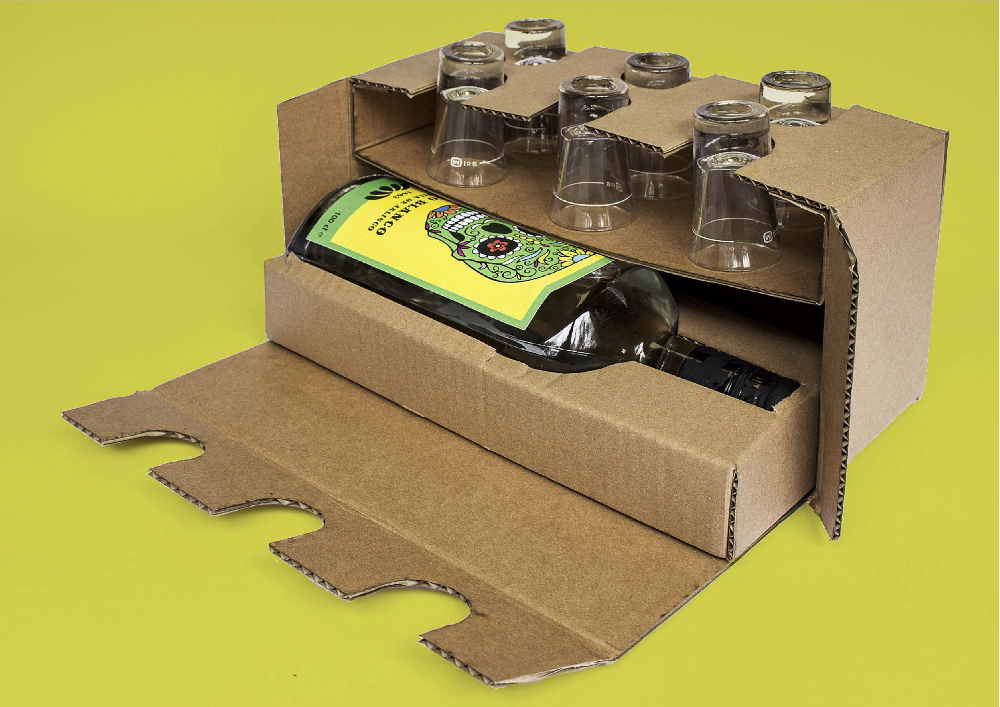

Fuego Blanco
Packaging for a tequila brand.
Visual Design, Prototyping

"If there's a tendency to think that packaging is superfluous, incidental, or even unnecessary, the truth of the matter is quite the contrary" Packplay 2 by Sylvain Allard. This project was the result of a week workshop. The aim of the workshop was to create a packaging reflecting on susteinability and the role that a packaging can have in the experience of the use of a product.
An experience inside a packaging that celebrates time spent together. This packaging is unexpected, and only reveals a part of the inner products (shot glasses). The name "Fuego Blanco" is sinesthetic and refers to the feeling while drinking tequila. Six partially hidden glasses suggest celebrating good times with friends. The place where the package reveals only a portion of the glasses gives access to a bottle of Tequila.

Packplay 2 project
Following the success of Packplay in 2014, École de design de l’UQAM and Éco
Entreprises Québec (ÉEQ) partnered to launch the second edition of the competition
and announce that they have joined forces with the World Design Summit
(WDS)—a major multisectoral event that will attract participants and speakers
from around the world from October 17 to 20 at Palais des congrès de Montréal—to
feature Packplay 2 as part of the conference’s expo.
The book was co-written by Geneviève Dionne and Sylvain Allard.
It was conceived like an educational guide to assist designers in the practice of packaging
design.
The book, written in French and English, aims to introduce readers to
the challenges and opportunities of ecodesign while critically examining the complexity
of issues throughout the life cycle.
It is a reference tool for the industry and for packaging designers.